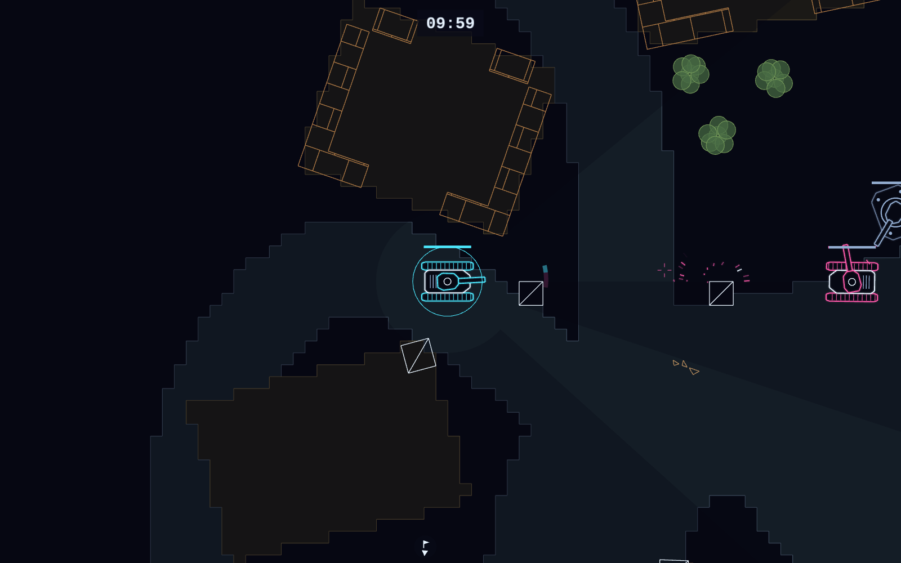
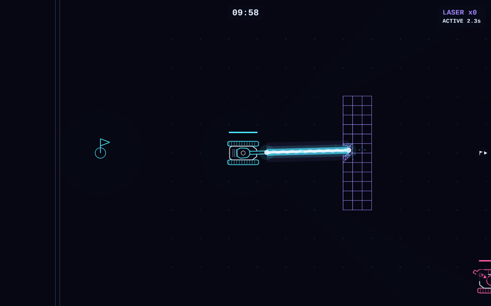
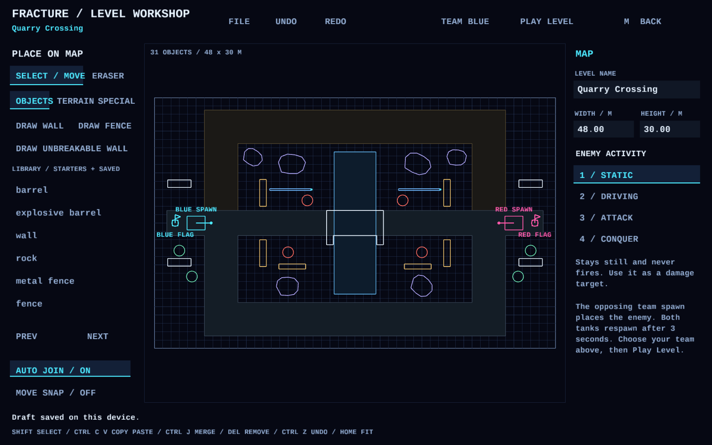

Scout car
Speed. Vision. Opportunity.
Light armor, all-around vision, and a rapid-fire gun. Find a gap and make a dash for the flag.
DESTRUCTIBLE TANK COMBAT
Walls are temporary. The battlefield remembers.
Blast a way through and reach the enemy flag.
LINUX / STEAM DECK / macOS

SEE IT IN ACTION
Watch the gameplay trailer.
THE BATTLEFIELD IS YOURS TO CHANGE
Break walls, bring down bridges, and push through the debris. The damage stays, turning yesterday’s cover into your next attack route.
Use roads for speed, disappear into tall grass, and watch the fog of war. Touch the enemy flag to win. Get destroyed? Pick another vehicle and get back in the fight.
Read the field guide
CHOOSE YOUR APPROACH
Pick your ride at the start.
Change your tactics when you respawn.
Speed. Vision. Opportunity.
Light armor, all-around vision, and a rapid-fire gun. Find a gap and make a dash for the flag.
Make an entrance.
A rotating turret, explosive and armor-piercing shells, plus special weapons. Open a route or hold the crossing.
Go over their defenses.
Heavy armor and arcing shells that pass over cover. Stop to tighten your aim and make every shot count.

SANDBOX INCLUDED
Lay out roads, rivers, bridges, cover, and pickups. Playtest as either team, export your map, and bring it into the game lobby.
The separate sandbox also lets you experiment with weapons and create your own destructible scenery.
Open the map editor guideREADY WHEN YOU ARE
Play against the AI or gather up to six players on your local network.
One player hosts. Everyone picks a team. The battlefield does the rest.
Extract the package and run fracture.sh. Use install.sh to add it to your app menu.
Install in Desktop Mode, add fracture-deck.sh as a non-Steam game, and use the Gamepad template. Leave Proton disabled.
Choose Apple Silicon or Intel, extract the package, and drag Fracture.app to Applications.